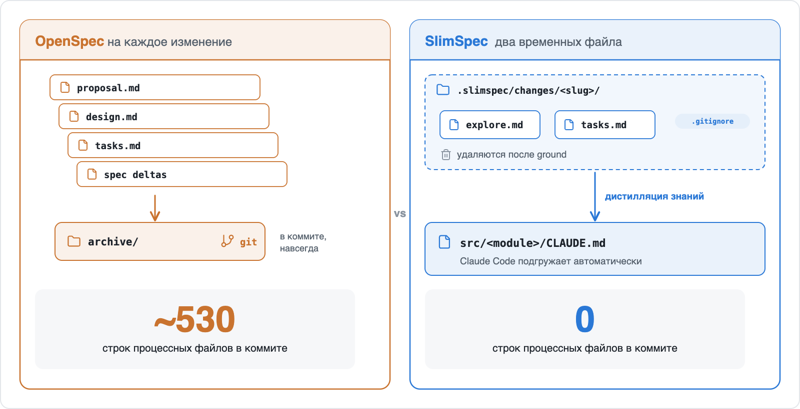
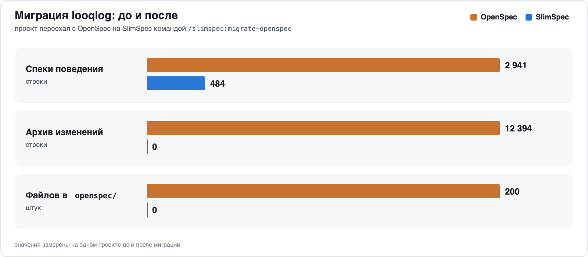
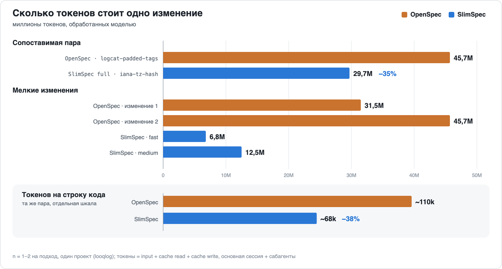
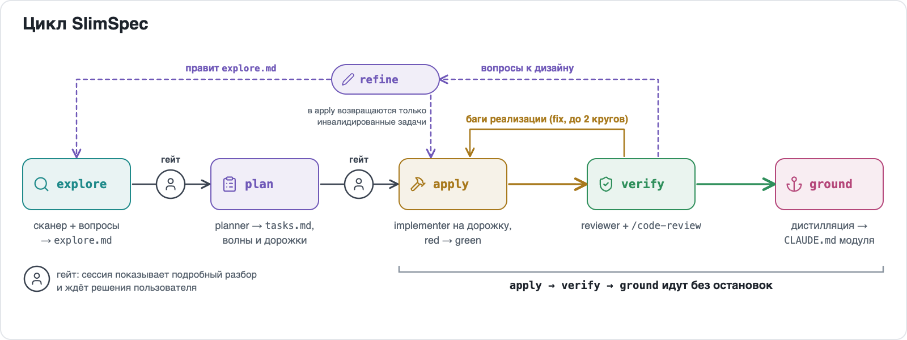
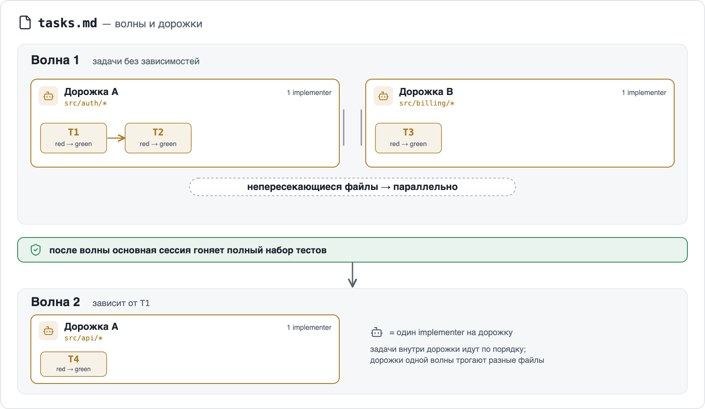
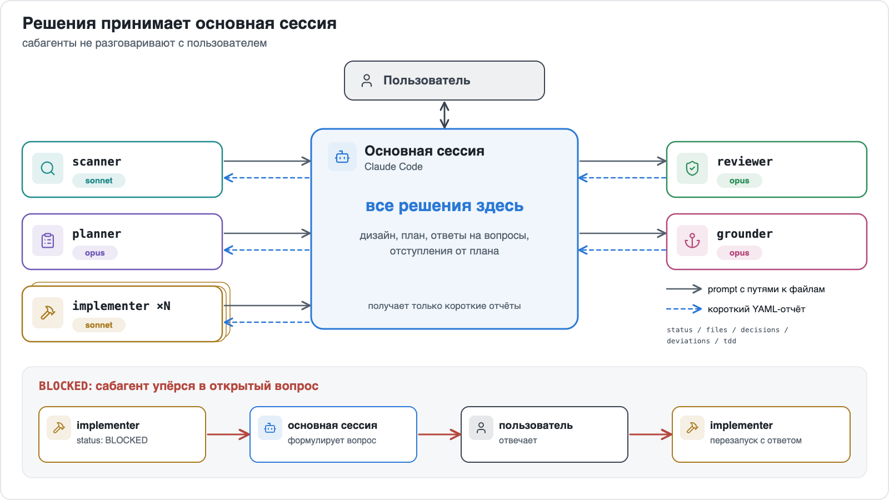
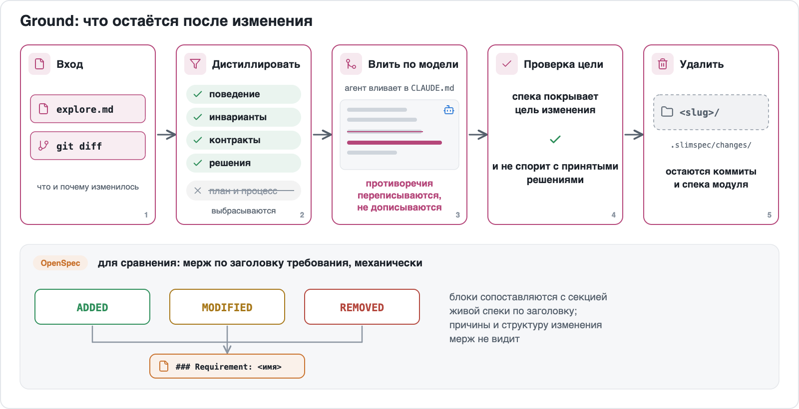

Сильным моделям не нужны тяжёлые спеки.
Агент сам восстанавливает картину, быстро пробежав по коду. Спеке остаётся подсказать ему, что делать и где искать. А explore уже и есть спека изменения.
SlimSpec это плагин для Claude Code, построенный на этой идее. Он запускает цикл explore → plan → apply → verify с обязательным red-green TDD. На изменение заводятся два временных файла. У каждого модуля одна компактная спека во вложенном CLAUDE.md, который Claude Code подгружает автоматически: где искать и что нельзя сломать, и ничего больше.
Порядок тут обратный привычному SDD: сначала работа, а спека выходит из неё в конце, как стружка из-под рубанка.
/plugin marketplace add yushman/slimspec
/plugin install slimspec@slimspec/slimspec <идея>
Внутри только скиллы и описания агентов. Ни скриптов, ни хуков, ни CLI, так что ломаться тут почти нечему.
Зачем
Пока модели были послабее, SDD выручал. Контекст тесный, сабагентов нет, и каждая новая сессия открывала проект с лицом стажёра в первый рабочий день. Решение было простое: всё записать, записанное закоммитить, следующей сессии дать почитать. Так появились OpenSpec и Superpowers, и их лучшая находка, дизайн раньше плана, здесь осталась.
А потом попалось изменение в проекте вообще без SDD-фреймворка. Ни proposal, ни design, ни дельт, ни даже tasks.md. Модель прочитала код, нашла, что трогать, внесла правку, и правка прошла живое ревью у кодовнера. Ни одна спека при этом не пострадала: их просто не было.
На командном проекте с OpenSpec картина была другая. Корпоративная подписка, несколько терминалов с разными фичами, а процесс всё равно полз:
- После proposal пишутся design, tasks, дельты спек и прочее. Читали их редко. Зато все они коммитились и уезжали в архив: без бумажки ты букашка.
- Любая правка в незаархивированном change рождает ещё один change. Передумали на полпути? Возьмите талончик, как в МФЦ, и ждите своей очереди.
- Перед архивацией обязателен ребейз, а потом агента просят вручную проверить мерж спек: вдруг коллега уже переписал секцию, куда ляжет блок MODIFIED.
Рекорд по бумажной работе поставила задача на удаление. Выпилить ненужный кусок экрана: убрать код, убрать тесты, закрыть тикет. Дифф в итоге такой:

Ушло около 5,5 тысячи строк, и почти столько же пришло. Пришли спеки: proposal (зачем удаляем), design (как удаляем), tasks (в каком порядке) и дельты REMOVED (что именно удалили). Чтобы стереть ~5 тысяч строк кода, пришлось написать ~5 тысяч строк спек. Примерно как выносить мусор в сопровождении нотариуса.
В SlimSpec дизайном служит сама основная сессия. Вы обсуждаете изменение с агентом, и дизайн с планом складываются прямо в разговоре. Отступления фиксируются там же, нового change не требуется; если доработка разрастается, агент предлагает отправить её в non-goals. Файлы нужны только на случай, если сессия потеряется или её сожмёт компакшн. Это точка сохранения, а не сама игра.


Замеры на реальном проекте
Миграция
Один существующий проект, looqlog, просмотрщик логов на Rust с веб-интерфейсом, перевели с OpenSpec командой /slimspec:migrate-openspec. У него было 23 файла спек, 23 изменения в архиве, 200 файлов в openspec/ и 733 КБ истории. Агенту из этого было нужно немногое, но коллекция, как водится, пополнялась сама. До и после:
| OpenSpec | SlimSpec | |
|---|---|---|
| Спеки поведения | 23 файла, 2 941 строка, ~155 КБ | 3 файла, 484 строки, ~34 КБ |
| Архив изменений | 23 изменения, 12 394 строки, ~733 КБ | 0 |
Корневой CLAUDE.md | 130 строк | 121 строка |
Файлов в openspec/ | 200 | 0 |


Откуда разница
- Сценарии WHEN/THEN влились в требования, которые они и описывали. Пустые разделы Purpose и шаблонные SHALL ушли (SHALL, SHALL NOT, SHALL ALWAYS: спеки начали звучать как пользовательское соглашение).
- Одна спека на модуль вместо 23 на фичи. Агент читает только спеку модуля, в котором работает: правка в
web/подтягивает ~11 КБ, а не россыпь capability-файлов по всему дереву. - Архива изменений в рабочем дереве больше нет. В git-истории того проекта он остался.
Что потеряно
Гладко было на бумаге, а на деле кое-что пришлось отдать:
- Сценариев как списка тест-кейсов больше нет.
- Обоснования отдельных изменений пропали. Часть сохранилась в ADR, остальное есть только в git-истории, для любителей
git blameпо выходным. - Самая большая спека модуля (~14 КБ) грузится целиком при любой работе в этом модуле.
Спустя четыре изменения на SlimSpec спеки модулей занимают 4 файла и 641 строку, всё ещё на 78% меньше спек OpenSpec, которые они заменили. Рост теперь идёт вслед за кодом, а не за церемониями.
Стоимость изменения
Тот же проект до и после миграции, замер по транскриптам Claude Code. Токенами здесь считается весь вход, который обработала модель (input + чтение кэша + запись в кэш), основная сессия и субагенты вместе. Самая близкая по размеру пара:
OpenSpec (logcat-padded-tags) | SlimSpec full (iana-tz-hash) | |
|---|---|---|
| Изменено кода | 409 строк, 4 файла, один модуль | 435 строк, 15 файлов, три модуля |
| Обработано токенов | 45,7M | 29,7M (−35%) |
| Токенов на строку кода | ~110k | ~68k (−38%) |
| Ревью | нет | 2 раунда verify на глубине high; один реальный блокер (паника на крайних датах) исправлен внутри изменения |
| Закоммичено процессных файлов | ~530 строк (proposal, design, tasks, дельты спек, devlog) | 0 (папка изменения удалена; правки спек лежат в CLAUDE.md модулей) |
| Общее время, с гейтами | 91 мин | 56 мин |


При этом SlimSpec сделал больше: 5 вопросов по решениям и 3 гейта, 9 задач в 3 волнах, ground в 4 спеки, ADR и оба README. Блокер, который поймал ревьюер, был паникой на крайних датах. Такие баги тихо сидят в коде, пока календарь не выкинет что-нибудь необычное.
Мелкие изменения показывают то же. Два изменения на OpenSpec обработали 31,5M и 45,7M токенов, два на SlimSpec (fast и medium) 6,8M и 12,5M. Один implementer в OpenSpec в одиночку обрабатывал 13–16M токенов, субагент SlimSpec 0–1M, потому что каждому достаётся одна узкая дорожка и держать в голове весь репозиторий ему не нужно.
Оговорки сразу: n = 1–2 на подход, один проект. Мелкие изменения на SlimSpec были в 5–10 раз меньше по коду, так что часть разницы объясняется размером. Часть агентов SlimSpec работала на Sonnet или Haiku. Основная сессия прогона SlimSpec full несла посторонний контекст из более ранней работы, что завышает её счёт. Выборка маленькая, разрыв большой: это наблюдение, а не бенчмарк.
Как идёт работа


refine правит explore.md и tasks.md и отправляет инвалидированные задачи обратно в apply. Галя, отмена, но не всего чека, а только задетых позиций. Запускается по замечаниям к дизайну из verify или когда задача в apply упёрлась в ошибку дизайна или плана.
- explore
- Агент-сканер читает спеки модулей, потом код, и возвращает короткую сводку. Основная сессия задаёт вам вопросы (одно решение на вопрос, независимые вместе) и пишет
explore.md. К плану сама не переходит. Готовьтесь, что вашей же идее зададут больше неудобных вопросов, чем вы планировали. В этом и смысл. - plan
- Планировщик пишет
tasks.mdволнами и делит каждую волну на дорожки из связанных задач. Дорожки одной волны трогают непересекающиеся файлы и идут параллельно. У каждой задачи указан первый падающий тест. - apply
- На каждую дорожку свой исполнитель: он проходит её задачи по порядку и по каждой приносит доказательства red и green. Полный набор тестов гоняется после каждой волны, чтобы дорожки, зелёные поодиночке, не сломались вместе незаметно. Если задача упёрлась в дизайн или план (не хватает решения, не те файлы, в задуманном виде не сделать), вопрос приходит к вам через
refine, и apply продолжает. - verify
- Ревьюер сверяет результат с планом и дизайном, проверяет доказательства TDD и сам код. Баги уходят обратно в apply, вопросы к дизайну приходят к вам через
refine. - ground
- Из изменения выделяются долговременные знания (поведение, инварианты, контракты, решения), и модель вливает их в спеки затронутых модулей. Поиск по ключевым словам для слияния не используется. После этого папка изменения
.slimspec/changes/<slug>/удаляется (или уходит в архив, см. «Конфиг»);.slimspec/и конфиг остаются.


Остановок две: после explore и после plan. Каждая остановка начинается с подробного разбора: после explore показывается дизайн с диаграммами, после plan показывается полный план (волны, дорожки, тесты по задачам). Остальные фазы идут без остановок и возвращаются к вам только с вопросами агентов, замечаниями к дизайну или после двух автоматических циклов исправлений. В это время можно заняться чем-нибудь другим.
Все решения принимает основная сессия. Субагенты выполняют работу и возвращают короткий структурированный отчёт: статус, файлы, решения, отступления от плана, red/green. Напрямую они вас ни о чём не спрашивают. Открытый вопрос возвращается как BLOCKED, основная сессия задаёт его вам и перезапускает агента с ответом. Отчёт выглядит так, без логов и диффов:
status: DONE | BLOCKED | FAILED
task: T3
files: [src/auth/token.ts, src/auth/token.test.ts]
decisions: ["used existing clock abstraction"]
deviations: ["renamed validate → verifyToken"]
tdd:
red: "token.test.ts: rejects expired token — FAIL (expected 401, got 200)"
green: "12 passed"
questions: []Простыни тестовых логов в основную сессию не попадают, а каждое решение и каждый итог в ней есть.


Изменение живёт в .slimspec/changes/<slug>/: это explore.md и tasks.md. По умолчанию папка в .gitignore и удаляется после ground. Историю хранят ваши коммиты и обновлённые спеки. Отряд не заметит потери бойца: всё ценное к этому моменту уже в спеках.
Ground ближе всего к классическому SDD. План и процесс выбрасываются: в какой волне шла T3, не понадобится уже никому. Остальное вливает агент, который понимает, зачем делалось изменение. Утверждение, которое противоречит изменению, он переписывает, а не подселяет к нему соседа, иначе спека постепенно превращается в ветку комментариев, спорящую сама с собой. Потом агент проверяет, что обновлённая спека покрывает цель изменения и не спорит с принятыми решениями. Результат ложится во вложенный CLAUDE.md модуля, и следующий агент, зайдя в модуль, найдёт спеку уже на месте.


TDD проверяется по свидетельствам red/green, а не хуком. Verify не примет задачу без red-прогона, и падать red должен по делу: тест, упавший на отсутствующем импорте, ничего не доказывает. Ты не пройдёшь! Где TDD неприменим (конфиг, стили, миграции), у задачи стоит test: none — <причина> и альтернативная проверка, а все такие исключения видны на гейте плана. Затерять «тут тесты не нужны» в середине списка не выйдет.
Режимы
| Фаза | fast | medium | full |
|---|---|---|---|
explore | inline, ≤3 вопросов, вместе с plan | scanner + grilling | то же + явный гейт на explore.md |
plan | секция внутри explore.md | агент planner, волны из дорожек | то же + полный tasks.md на гейте |
apply | один implementer, TDD | по implementer на дорожку | то же |
verify | reviewer, глубина low | reviewer, глубина medium | reviewer, глубина high |
ground | обновить затронутые спеки | дистилляция + проверка намерения | то же |
fast подходит для правки в одну строку, на которую стыдно писать proposal. full для изменения, на которое хочется вторую пару глаз. Не хотите выбирать? /slimspec предложит режим после скана.
/slimspec <идея> # режим из конфига, предлагается после скана
/slimspec:fast <идея> # фиксированный режим, без предложения
/slimspec:medium <идея>
/slimspec:full <идея>
/slimspec:debug <баг> # сначала первопричина, потом plan → apply → verify → ground
/slimspec # активные изменения: продолжить или отменить/slimspec:debug заменяет explore для багов. Агент debugger воспроизводит баг, проверяет гипотезы по одной и возвращает первопричину с доказательствами; сам он ничего не чинит. Основная сессия превращает это в explore.md, воспроизведение становится первым падающим тестом, и цикл идёт дальше с гейта. Режим можно зафиксировать первым словом: fast, medium или full.
Каждую фазу можно вызвать и отдельно: /slimspec:explore, :plan, :apply, :verify, :refine, :ground.
OpenSpec, Superpowers и SlimSpec
SlimSpec использует части обоих инструментов: дизайн раньше плана у обоих и слияние спек, после которого остаётся только важное, у OpenSpec. В таблице перечислено только то, в чём SlimSpec отличается; жирным в колонке SlimSpec выделено, в чём он лучше.
| OpenSpec | Superpowers | SlimSpec | |
|---|---|---|---|
| Цикл | explore → propose → apply → verify → archive, на каждый шаг своя команда; explore и verify необязательны | brainstorming → worktree → plan → execute → завершение ветки; скиллы срабатывают сами | Одна команда, две остановки. Ведёт от explore до ground, вы останавливаетесь на двух гейтах; verify не пропускается |
| Explore | /opsx:explore, необязательный собеседник «подумать» перед proposal | brainstorming; когда дизайн проекта одобрен, следующим шагом идёт план | Explore и есть спека изменения. Вопросы по одному решению записываются в explore.md (цель, не-цели, решения, риски); отдельных proposal и design нет |
| Артефакты изменения | proposal, design, tasks, дельты спек; потом папка уезжает в архив в репозитории | для проекта: дизайн-документ с датой в docs/superpowers/specs/ (коммитится) и план в docs/superpowers/plans/; мелкие правки согласуются в чате | В коммит идут только код и правки спек. explore.md + tasks.md, в .gitignore, удаляются после ground |
| Живая спека | файл на capability в openspec/specs/, агент читает, когда вы на него укажете | нет; на проект один дизайн-документ | Грузится сама и только там, где вы работаете. Одна спека на модуль во вложенном CLAUDE.md |
| Слияние спек | секции ADDED / MODIFIED / REMOVED применяются к основной спеке по требованиям при архивации | в живую спеку ничего не сливается | Слияние по смыслу. Модель переписывает противоречия и сверяет результат с намерением изменения |
| Субагенты | встроенного механизма нет | свежий субагент на каждую задачу и ревью после неё, либо выполнение в той же сессии | Узкие агенты, дешёвый контекст. Scanner, debugger, planner, параллельные implementer по дорожкам, reviewer, grounder, у каждого своя модель; вопросы поднимаются к вам |
| Замеренная стоимость | 45,7M токенов на изменение ~400 строк | не замерялась | 29,7M токенов на сопоставимое изменение, с двумя раундами ревью |
Чего нет в SlimSpec. У OpenSpec сценарии остаются явными тест-кейсами, рядом со спеками лежит полная история всех изменений, и он работает с 30+ AI-инструментами. В Superpowers есть скиллы помимо работы со спеками (worktree, код-ревью и другие), и он поддерживает многих агентов. SlimSpec работает только с Claude Code и покрывает только spec-driven цикл. Он крутит один цикл и держится своей дорожки.
Переезд с OpenSpec или Superpowers
/slimspec:migrate-openspec # openspec/specs/ → спеки модулей
/slimspec:migrate-superpowers # дизайн-документы Superpowers → спеки модулей- Переносятся только спеки. Каждая спека источника привязывается к модулям, сжимается в ваш
spec.formatи сверяется с кодом. - Сначала вы подтверждаете таблицу «источник → спека» и решаете по каждому утверждению, с которым расходится код. Ошибаться может любая сторона, и выбирать победителя за вас инструмент не станет.
- Изменения, планы и служебные файлы не конвертируются. Удаляются они только на финальном шаге очистки и только то, что вы подтвердите. Код не трогается.
- Сам плагин Superpowers удаляется через
/plugin uninstall.
Конфиг
Конфиг необязателен: у каждого ключа есть значение по умолчанию, и если настраивать ничего не хочется, можно не настраивать. /slimspec:init задаёт несколько вопросов в сессии и записывает .slimspec/config.yaml:
mode: medium # fast | medium | full
spec:
format: claude-md # claude-md | readme | central | native | none
unit: auto # auto (по билд-файлам) | glob директорий, напр. "src/*/"
adr: false # дополнительно вести решения в docs/adr/NNNN-*.md
test: auto # или явная команда
commit: none # none | lane | wave
changes:
closed: delete # delete | archive (.slimspec/archive/<дата>-<slug>/)
gitignore: true # добавить .slimspec/changes/ и .slimspec/archive/ в .gitignore
apply:
agents: 3 # максимум параллельных implementer = максимум дорожек в волне
review:
depth: auto # auto (по режиму) | low | medium | high
models: {} # переопределения по ролям, см. нижеchanges решает, что происходит с папками изменений. При closed: archive ground не удаляет закрытое изменение, а переносит его в .slimspec/archive/<дата>-<slug>/; архивные изменения не показываются в списке и не продолжаются. При gitignore: false .gitignore не трогается, и с commit: lane или wave файлы изменения попадают в коммиты дорожек или волн, а ground коммитит их удаление или перенос вместе с правками спек.
models задаёт модель агента каждой фазы, ключ — роль: haiku | sonnet | opus. Неуказанные ключи остаются по умолчанию.
| Фаза | Роль (ключ models) | По умолчанию |
|---|---|---|
explore (medium, full) | scanner | sonnet |
debug | debugger | opus |
plan (medium, full) | planner | opus |
refine (структурное перепланирование, medium, full) | planner | opus |
apply | implementer | sonnet |
verify | reviewer | opus |
ground | grounder | opus |
Вопросы, гейты, разбор замечаний и остальная часть refine идут в основной сессии, на модели вашей сессии. В fast там же, без агентов, идут explore и plan.
models:
implementer: opus # код сложнее обычного
scanner: haiku # небольшой репозиторий с хорошими спекамиДорогим моделям достаётся думать, дешёвым печатать. При commit: lane или wave коммитит только основная сессия, агенты никогда. SlimSpec никогда не пушит, и это не недоделка.